opc 统一架构学习笔记
整体架构
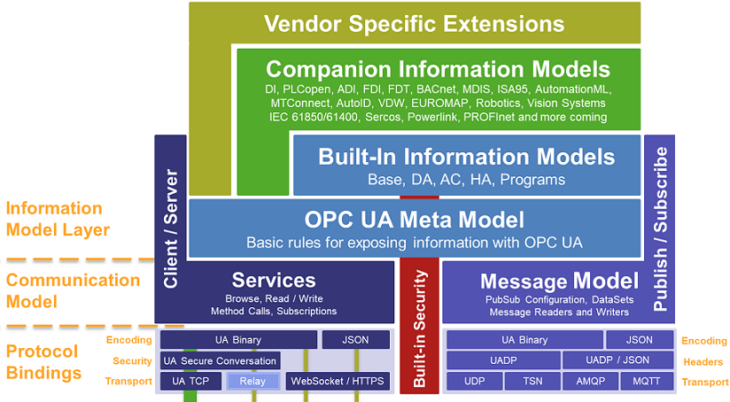
2. 概念
2.2 节点和引用
Property 翻译为特性 Attribute 翻译为属性
2.3 引用类型
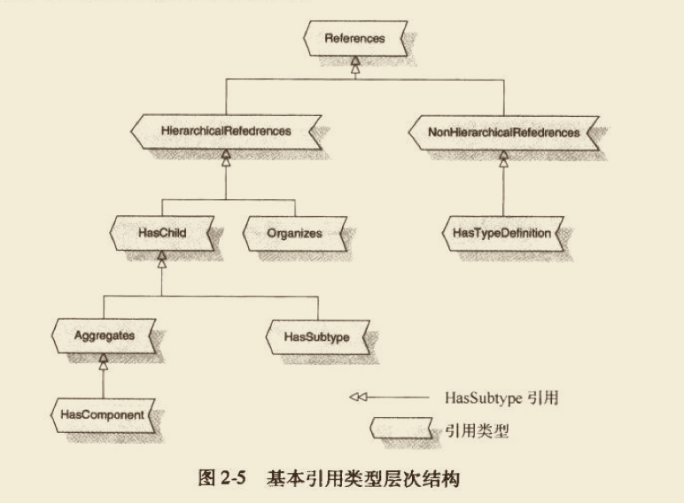
ReferenceType 只支持单一继承
HasTypeDefinition 表示指向该实例的类型.
Organizes 表示两个节点通过层次的方式连接起来,比如Folder. Orgnanizes不能避免循环
HasChild 不允许产生循环 定义了无循环层次结构
Hascomponent 继承了 is-part-of 的语义 不能产生循环,但是允许有两个父节点, 比如Device1和Device2都可以HasComponent同一个Config节点.
HasSubType 引用类型暴露类型层次结构
不允许相同的节点之间提供两次类型和方向相同的引用
5 服务
5.2 服务的一般概念
5.2.1 超时处理
客户端设置的超时时间是会发送到服务器的,服务器可以据此放弃返回调用结果给客户端.
5.2.5 通信上下文
会话具有超时特性,服务器在超时后会释放资源.
订阅是服务器和客户端见数据变化和事件通知的上下文.
- 订阅可以在会话之间传递.
- 当一个客户端当掉时另一个冗余客户端可以在他的会话中使用此订阅
- 订阅的生命周期独立于会话的生命周期
opc ua有37个服务,其中21个服务是管理通信基础设施和上下文,只有16个服务是用来交换数据的.
opc ua数据服务
| 服务名称 | 描述 |
|---|---|
| Browse | 浏览OPC UA服务器地址空间中的节点,客户端定义了初始节点和过滤器,服务器返回过滤后的节点引用列表. |
| BrowseNext | ^ |
| TranslateBrowsePathsToNodeIds(转换浏览路径到节点标识) | 基于对象的类型,获得对象组件的NodeId |
| Read | 读取一组节点的,包括变量值. 比如一次读取某个节点的BrowseName,AccessLevel等 |
| Write | 写一组节点的属性,包括变量值 |
| Publish | 从OPC UA 服务器向订阅的客户端发送变化的数据或者事件 |
| Republish | ^ |
| Call | 调用一个方法 |
| HistoryRead | 读变量值的历史或者事件的历史 |
| HistoryUpdate | 更新变量值的历史或事件的历史.该接口非常奇怪,rust版本实现了 |
| AddNodes | 在服务器的Address Space中添加Node ,包括对象实例的实例化过程 |
| AddReferences | 在服务器的地址空间中,添加节点间引用 |
| DeleteNodes | 删除节点 |
| DeleteReferences | 删除引用 |
| QueryFirst | 在地址空间中,通过复杂的过滤标准,返回节点和属性值的列表(和browse区别在哪里呢) |
| QueryNext | ^ |
5.5 在地址空间中查找信息
5.5.1 使用服务发现地址空间
- Browse
- BrowseNext
- Read 前三个可以参考browse例子,
- TranslateBrowsePathsToNodeId
第四个可以参考translate例子
注册节点服务 RegisterNodes 该服务是告诉服务器,要对这个节点的访问进行优化
取消注册节(UnregisterNodes)点服务 让服务器释放相关资源
5.7 订阅数据变化和事件
订阅的内容有:
- 订阅变量值的变化
- 事件
- 订阅聚合(Aggregate)
订阅的工作机制:
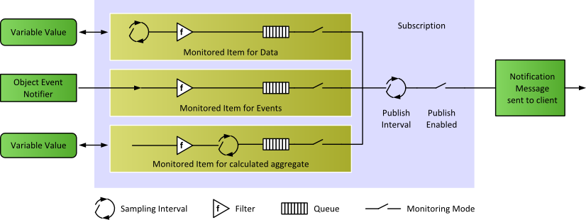
5.7.1 数据变化及事件通知
早期采用过服务器调用客户端方法发送数据变化和事件通知,即定义回调接口来实现. 但是这对防火墙不友好,需要:
- 使用TCP协议(目前的版本是可以不用tcp的)
- 或者使用http双向连接 (客户端也需要提统一个http 服务端口)
发布请求(PublishRequest)不是和特定的订阅绑定的.
保持活动的消息
单独的ping包来做活动保持,不使用PublishRequest,是因为这个代价大得多.
TransferSubscriptions服务: 当主客户端不可用时,将订阅从主客户端转移到备份客户端.
5.7.4 监视数据变化
和opc da比起来,UA 除了可以订阅变量Value属性改变外,还可以订阅其他属性的变化.
- StructureChanged 数据类型发生了变化
- SemanticsChanged 变量语义发生了变化,如变量的工程单位变了.
Trigger需要一个例子
5.7.5 监视事件
事件与数据监视项的主要不同之处在于选择信息子集的方式。对于数据项客户端精确选择一个变量值，并且监视这个值的变 化。而对于事件项通常不能直接选择事件源，原因是 EventNotifiers对象可能合并了 大量的事件源。
5.9.2 历史更新服务(HistoryUpdate)
这个服务用来插入、替换、更新或删除历史值或者事件。 这个服务好奇怪
5.10 在复杂地址空间里查找信息
Browse相当于按照目录树一步一步往下走,而Query则是执行一个搜索,它允许定义过滤规则来检索节点和信息的子集.
参数含义,检索QueryFirst
6 技术映射
6.3 安全协议
6.3.1 WS-SecureConversation
6.3.2 UA-SecureConversation
OPC UA的一个用例是在一台机器上运行多个服务器，它们共享相同的IP地址和端口，传输层的一个特殊寻址机制允许这样做。但TLS1.1只支持一个IP地址/端口一个证书，不允许端到端的安全性。这意味着上述情况不能使用TLS1.1加密。
这块是否能考虑加入国密的支持呢?
6.4 传输协议
传输协议支持UA TCP和SOAP/HTTP两种.
6.4.2 UA TCP
- Hello消息(HelloMessage) 协商客户端和服务器的配置
- 确认消息(AcknowledgeMessage) 确认或修改请求的缓冲区大小
- 错误消息(ErrorMessage)
6.4.2 SOAP/HTTP
优点:
- 简单
- 对防火墙友好
OPCUA使用的SOAP消息的通用结构和交换模式定义在［W3C07a］和［W3C07b］中。
此外，TLS并不符合OPCUA的所有需求。但在某些情况下，不需要满足所有OPCUA的要求时，可以禁用UA安全特性(UAsecurity)而使用基于TLS的HTTP代替。
基于C#的协议栈,实现了所有的映射. 可以参考其实现.
ANSI-C 实现只提供UA二进制,UA-SecureConversation和UA TCP的实现.
7 安全
- ERP 企业资源规划系统
- MES 制造执行系统
7.5 OPCUA的安全模型
7.5.1 安全架构
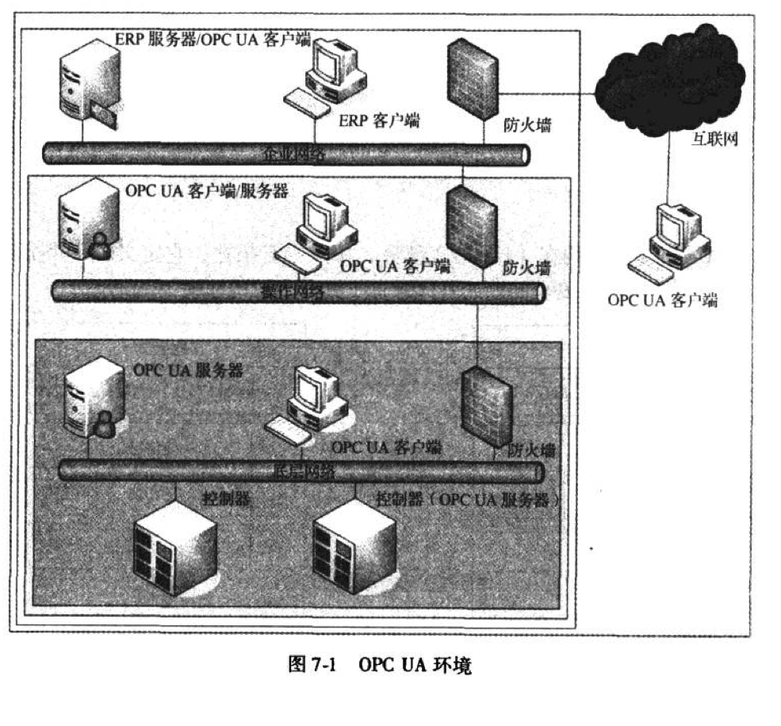
在顶层，安全性可能比性能重要，因为这时网络直接连到了互联网上。在底层的要求可能是完全不同的：性能可能比安全更重要，因为这时必须以非常快速和高效的方式获取数 据，以控制生产过程。
7.5.2 信道安全
- 无
- 签名
- 签名且加密
2. 扮演
log-over用户会话或者叫用户扮演(user impersonation)
OPC UA 使用激活会话服务来处理这个用例。正如图 7 -7 所示，如果会话已经运行（安全通道和会话已经创建并激活），后续使用新用户凭据（例如，用户 “B” 的凭据）的激活会话请求就发送到OPC UA 服务器。用户凭据是由认证服务验证的， 这个服务可以是使用LDAP 的目录服务。如果接管会话的用户经过了身份认证和授 权 ，服务器就改变本地会话管理器中该会话的所有者，并给客户端一个响应。
7.5.3 身份认证和授权
口令类型:
- Anonymous 没有可用的用户信息
- UserName 通过用户名和密码识别用户
- X509v3 通过X509v3 证书识别用户
- WSS 通过 WS-SecurityToken 识别用户（如 SAML、Kertieros 票据）
9 系统架构
9.1 系统环境
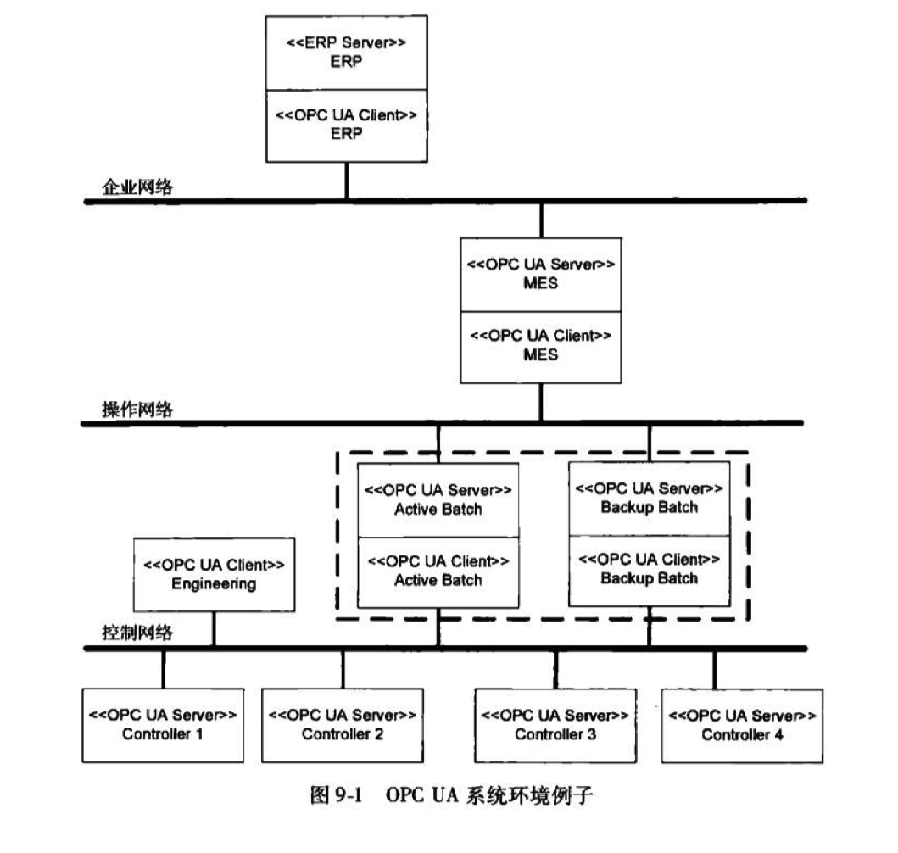
9.2 基本架构模式
9.2.1 客户端服务器
9.2.2 链式服务器
书中给的图是错的
例子: 客户端->opc 网关-> opc ua服务器
9.2.3 服务器至服务器通信
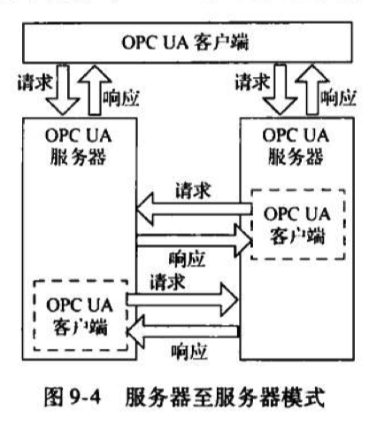
但为何服务器之间要相互通信呢？其中一个典型的应用案例就是服务器冗余。在故障恢复情况下，为了向客户端提供相同数据，服务器需复制它们的数据，尤其是当两个服务器都在运行，并且处于操作状态时（例如9.3节描述的热一故障恢复概念)
9.2.4 聚合服务器
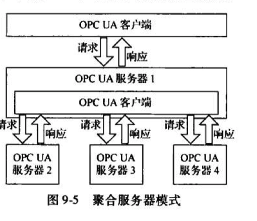
这样的一个模式可以应用于MES领域。服务器2服务器3服务器4在这种情况下，普通的OPCUA客户端可用聚合服务器模式来执行并监控生产需求。一个生产需求包括要生产的产品类型与数量的许多其他信息。OPCUA服务器1处理请求并分发子任务给基础服务器。从而，每个聚合服务器都对生产过程的某个指定部分负责。一旦它们完成自身任务，就将结果返回给OPCUA服务器1,这些结果构成了对普通客户端的响应。在响应发送给普通客户端之前，从聚合服务器获得的数据以一个特殊的方式为客户端做准备。例如，请求的整体状态或一些如错误发生次数的统计数据可被返回。
9.3 冗余
9.3.1 客户端冗余
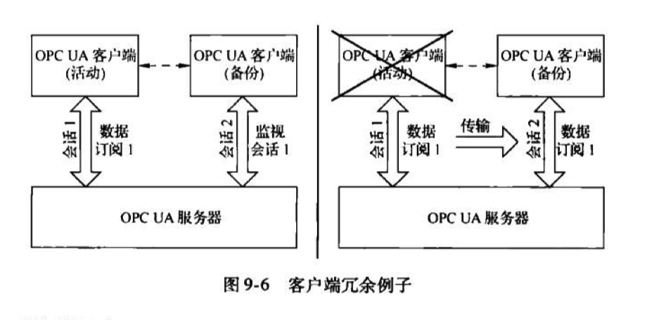
假设有一个备份客户端的活动OPCUA客户端订阅了数据变化。该备份客户端用监视OPCUA中其他数据的同样方式监视服务器地址空间内的活动客户端的会话信息。一旦活动客户端失效且地址空间内会话状态改变，备份客户端就使用Transfersubscriptions服务从活动客户端获得所有运行的订阅。订阅可以比会话存活更久，因为它们的生命周期与会话的生命周期无关。因此，在该故障恢复过程中，服务器必须将要发送的数据缓存到客户端以避免数据丢失。这一机制要求备份客户端清楚监视会话的Sessionld以及传输活动客户端订阅的Subscriptionld。但是OPCUA没有制定一个明确的方法在客户端之间交换这些信息。
9.3.2 服务器冗余
9.3.2.1 透明服务器冗余
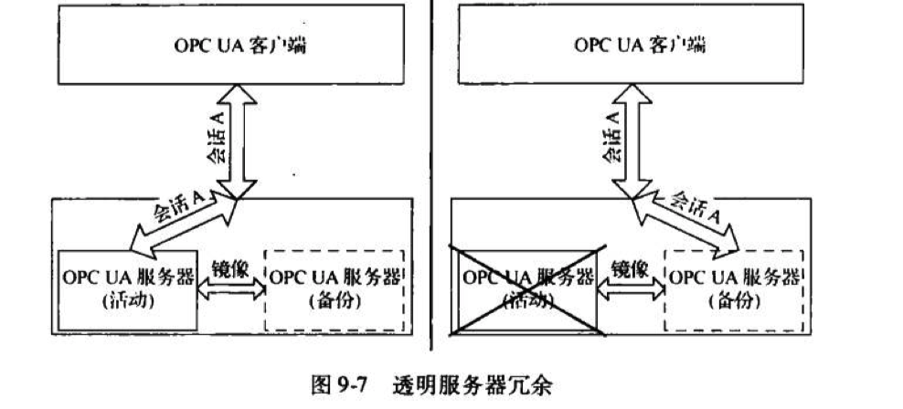
在第一种方法中，服务器的冗余处理对客户端是透明的。这意味着在一个故障恢复案例中，客户端并没有意识到错误已发生，不需要做任何操作来继续执行任务。但是服务器有责任完全保证客户端能访问数据。这意味着冗余服务器要被镜像。它们需持有完全一样的数据和会话信息。图9-7显示了一个例子。若活动服务器不能再使用，后续请求则被重定向到备份服务器。
9.3.2.2 非透明冗余
| 故障切换模式 | 备份服务器作用 | 客户端动作 |
|---|---|---|
| 冷 | 备份服务器在运行，但是不活跃。一旦活动服务器失效，备份服务器即被激活 | 初始连接：无任何动作 故障切换： ① 连接到备份服务器 ② 创建订阅并添加被监视项 ③ 激活订阅取样 ④ 激活通知报吿 |
| 暖 | 备份服务器在运行且活跃，但是不能连接上实际数据点。这适用于连接基础设备的数目被限制的情况。因此备份服务器只连接到故障切换中的设备 | 初始连接： ① 连到活动与备份（服务器） ② 创建订阅和添加被监视项（启用活动服 务器的订阅并禁用备份服务器的订阅） 故障切换： ① 激活订阅取样 ② 激活通知报告 |
| 热 | 备份服务器像活动服务黠一样处于完全运作且可用来访问数据。当活动服务器中止，备份服务器以更高负载运行——因为前面所有连接到活动服务器的客户端都移到备份服务器 | 初始连接： ① 连到活动与备份（服务器） ② 创建订阅并添加被监视项 ③ 激活订阅取样 故障切换： 激活通知报告 |
暖切换模式: 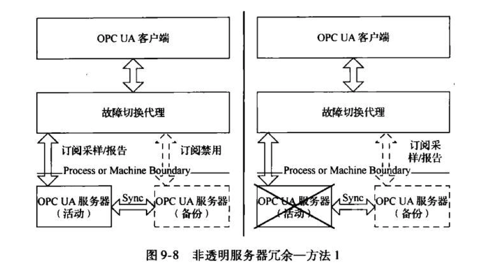
热切换模式: 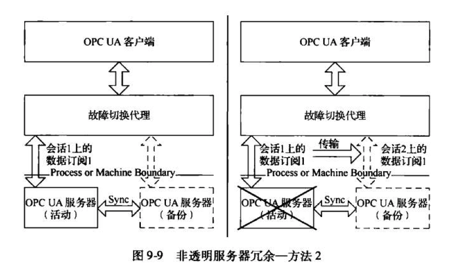
9.4 发现
这部分并不像描述的那么清晰,很多细节不同的实现有问题,比如Rust版本中的.
其他问题
1. secure channel,session,subscription,monitored item 之间的关系

但是subscription的生命周期是长于session的,可以在session之间移动.